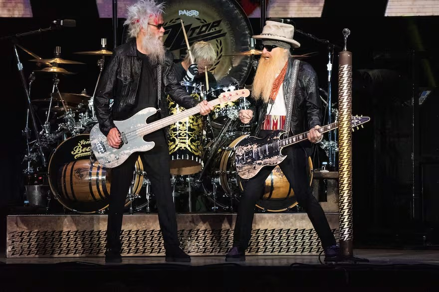
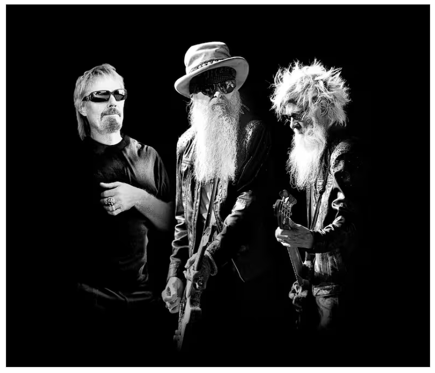

qué sale?
ZZ Top vuelve a la Argentina: cuándo toca en el Movistar Arena y cómo comprar entradas
La banda texana regresará al país con su gira The Big One! después de 16 años; venta se hará por etapas a través de la ticketera oficial
15 de abril de 2026 · 10:55 · 3 minutos de lectura

ZZ Top confirmó su regreso a la Argentina con un recital en el Movistar Arena de Buenos Aires. La presentación está prevista para el 24 de noviembre y marcará la vuelta del grupo al país tras 16 años de ausencia.
La vuelta tiene valor propio dentro de la agenda del rock: se trata del regreso local de una banda con más de medio siglo de historia. La formación actual está integrada por Billy F Gibbons, Frank Beard y Elwood Francis.
Cuándo y dónde es ZZ Top en Buenos Aires

- Fecha: 24 de noviembre.
- Lugar: Movistar Arena, Buenos Aires.
- Gira: The Big One!
- Preventa: 16 de abril a las 10.
- Venta general: 17 de abril a las 10.
Cómo comprar entradas para ZZ Top paso a paso
- Ingresar al sitio oficial de Movistar Arena
- Iniciar sesión o crear una cuenta en la plataforma de la ticketera oficial.
- Buscar el recital de ZZ Top en la agenda del estadio. En la cartelera ya figura el show del 24 de noviembre.
- Esperar la instancia habilitada: primero la preventa del 16 de abril a las 10 y luego la venta general del 17 de abril a las 10.
- Completar la operación. Según la ticketera oficial, los e-tickets se envían por mail.
Un regreso con historia
ZZ Top se formó a fines de 1969 en Texas y construyó una carrera marcada por discos como Tres Hombres y Eliminator. En 2021 murió Dusty Hill y su lugar pasó a ser ocupado por Elwood Francis, quien ya venía trabajando desde hacía años con la banda.